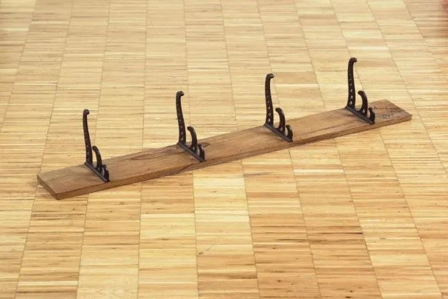
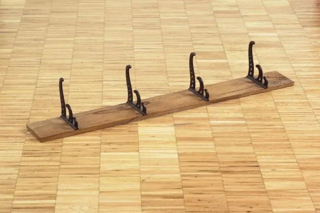

What makes art, art? Who decides what is considered art? I wondered this same thing during Art History 1000 with Professor Leslie Dawn. I didn't understand why something as simple as a banana taped to a wall could beconsidered art. What I didn't know was that on that same day, I would be introduced to Marcel Duchamp. Duchamp wondered the same thing and became one of the most influential artist in history, changing the course of art history. Duchamp's Readymades challenged all connotations of art, irritating avant-garde professionals and enlightening viewers across the world. As the father or Conceptual art, Duchamp insisted that art should be driven by ideas. So you tell me, what makes art, art to you?

 
